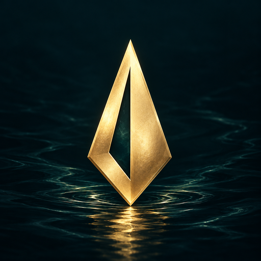

Survive the current
Explore 49 passages across seven acts. Steer through narrow channels, rocks, logs and tangled roots.
The river has fallen silent. Guide Mira through dangerous passages, read the current and listen for what moves beneath the water.
Android · Offline single-player · Currently in testing

Explore 49 passages across seven acts. Steer through narrow channels, rocks, logs and tangled roots.
Face lurking hunters with the harpoon and Sonic Repel. Protect your boat and carry the living seed onward.
No account, ads or in-app purchases in this test release. Adjust audio, vibration, difficulty and graphics.